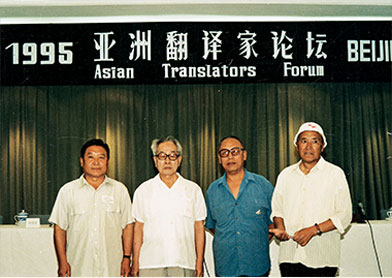
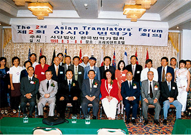
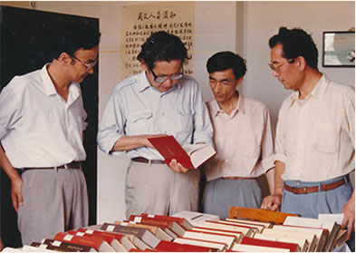
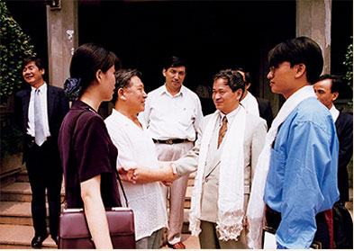
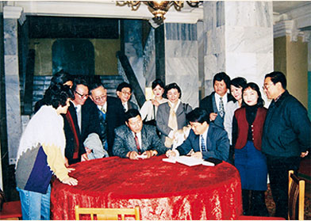
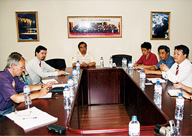
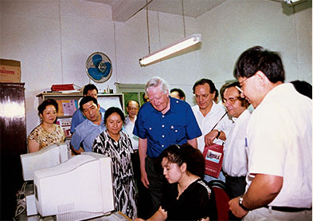
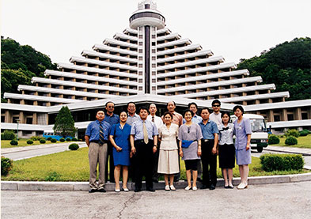
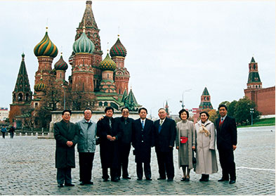

|  1995年，第二届亚洲翻译家论坛在北京召开，中国民族语文翻译局有关负责人出席会议，并在大会上宣读了论文 |  1998年8月，吴水姊同志参加了在韩国举办的第三届亚洲翻译家论坛。图为参加会议的代表与国际译联的负责人合影 |
|  哈萨克斯坦议会议员访问翻译局 |  越南民族工作访华团访问翻译局 |
|  2000年，翻译局访问团与蒙古国国立博物馆签署合作意向书 |  捷克赴中国新闻访问团在中国民族语文翻译局参观考察，并与藏学专家进行交流 |
|  澳大利亚访华团参访翻译局 |  应金日成综合大学邀请以丹珠昂奔为团长、吴水姊为副团长的中国民族语文翻译局跨境民族语言文字考察团于2002年访问朝鲜民主主义人民共和国。考察团在妙香山合影。 |
|  以丹珠昂奔为团长、宝斯尔为副团长的中国民族语文翻译局跨境民族语言文字考察团在俄罗斯莫斯科红场合影留念。 |